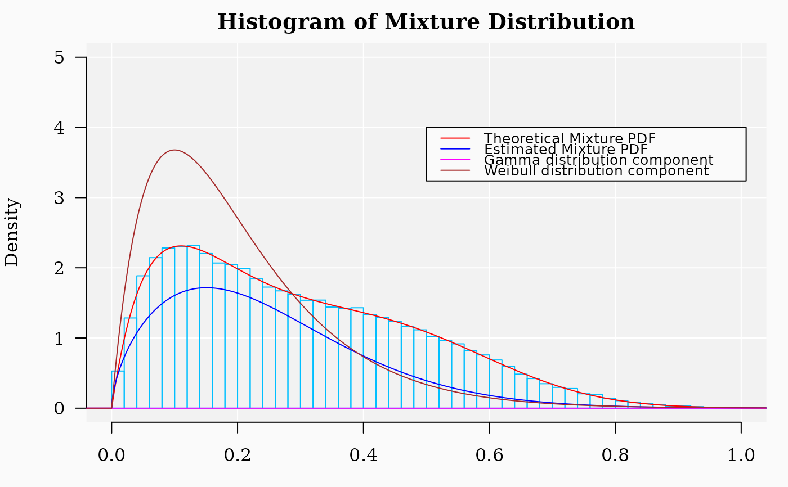

This function performs the nonlinear fit of mixture
distributions exploiting a firth approach on parameterized finite
Gaussian mixture models obtained through the function
Mclust from package mclust.
fitMixDist(
X,
args = list(norm = c(mean = NA, sd = NA), weibull = c(shape = NA, scale = NA)),
dens = TRUE,
npoints = NULL,
kmean = FALSE,
maxiter = 1024,
prior = priorControl(),
ftol = 1e-14,
ptol = 1e-14,
maxfev = 1e+05,
equalPro = FALSE,
eps = .Machine$double.eps,
tol = c(1e-05, sqrt(.Machine$double.eps)),
usepoints,
iter.max = 10,
nstart = 1,
algorithm = c("Hartigan-Wong", "Lloyd", "Forgy", "MacQueen"),
seed = 123,
verbose = TRUE,
...
)numerical vector. It is user responsability to provide `X` values that belong the definition domain of the functions from mixture distribution.
Logic. Whether to use fit the 'PDF' or 'CDF'. Default is TRUE.
number of points used in the fit of the density function or
NULL. These are used as histogram break points to estimate the empirical
density values. If npoints = NULL and dens = TRUE, then.
Kernel Density Estimation function density from
stats package is used to estimate the empirical density. Default
value is 100.
Logic. Whether to use kmeans algorithm to
perform the estimation in place of Mclust. Deafult
is FALSE.
positive integer. Termination occurs when the number of iterations reaches maxiter. Default value: 1024.
Same as in Mclust function.
non-negative numeric. Termination occurs when both the actual and predicted relative reductions in the sum of squares are at most ftol. Therefore, ftol measures the relative error desired in the sum of squares. Default value: 1e-12
non-negative numeric. Termination occurs when the relative error between two consecutive iterates is at most ptol. Therefore, ptol measures the relative error desired in the approximate solution. Default value: 1e-12.
Integer; termination occurs when the number of calls to fn has reached maxfev. Note that nls.lm sets the value of maxfev to 100*(length(par) + 1) if maxfev = integer(), where par is the list or vector of parameters to be optimized.
An argument to pass to emControl
function. Logical variable indicating whether or not the mixing
proportions are equal in the model. Default: equalPro = FALSE.
Arguments to pass to emControl function.
Integer. Computation by function
Mclust could take long time when the sample size is
about >= 10000. This number can be used to extract a random sample of
size 'usepoints' and to do the estimation with it.
Same as in kmeans.
Seed for random number generation.
if TRUE, prints the function log to stdout and a progress bar
Further arguments to pass to other functions like
Mclust and density.
A list of named vectors with the corresponding named distribution
parameters values. The names of the vector of parameters and the
parameter names must correspond to defined functions. For example, if
one of the involved distributions is the gamma density (see
GammaDist), then the corresponding vector of
parameters must be gamma = c(shape = 'some value', scale = 'some value').
For the following distributions, the arguments can be provided with NULL
values:
"norm" (Wikipedia)
"hnorm" (Wikipedia).
"lnorm" (Wikipedia)
"gnorm" (Wikipedia)
"gamma" (Wikipedia)
"ggamma" (Wikipedia)
"beta" (Wikipedia)
"beta" (Wikipedia)
"laplace" (Wikipedia)
"weibull" (Wikipedia)
"rayleigh" (Wikipedia)
"exp" (Wikipedia)
Notice that the distribution given names correspond to the root-names as
given for R functions. For example, 'gamma' is the root-name for
functions GammaDist. See example, for more details. It
is necessary that any the root-name provided corresponds to a defined PDF
(if dens = TRUE) or to a defined CDF (if dens = FALSE) found in the session
`environment` (see ?environment).
Logical. If FALSE, then starting parameter values for each
mixture component will be estimated suing function fitCDF,
which could use more computational time. Default is FALSE
A list with the model table with coefficients and goodness-of-fit results, the fitted model returned by function
nls.lm, and a named list of fitted arguments.
The approch tries to fit the proposed mixture distributions using a
modification of Levenberg-Marquardt algorithm implemented in function
nls.lm from minpack.lm package that is
used to perform the nonlinear fit. Cross-validations for the nonlinear
regressions (R.Cross.val) are performed as described in reference [1]. In
addition, Stein's formula for adjusted R squared (rho) was used as an
estimator of the average cross-validation predictive power [1]. Notice
that the parameter values must be given in way understandable
by the set of functions mixtdistr (see the example below).
It is user responsability to provide `X` values that belong the
definition domain of the functions from mixture distribution.
1. Stevens JP. Applied Multivariate Statistics for the Social Sciences. Fifth Edit. Routledge Academic; 2009.
#'
set.seed(1) # set a seed for random generation
## ========= A mixture of three distributions =========
phi <- c(6 / 10, 4 / 10) #' Mixture proportions
## ---------------------------------------------------------
## === Named vector of the corresponding distribution function parameters
## must be provided
args <- list(
gamma = c(shape = 2, scale = 0.1),
weibull = c(shape = 3, scale = 0.5)
)
## ------------------------------------------------------------
## ===== Sampling from the specified mixture distribution ====
X <- rmixtdistr(n = 1e5, phi = phi, arg = args)
## ------------------------------------------------------------
## ===== Nonlinear fit of the specified mixture distribution ====
FIT <- fitMixDist(X, args = list(
gamma = c(shape = NA, scale = NA),
weibull = c(shape = NA, scale = NA)
))
#> fitting ...
#>
|
| | 0%
|
|=================================== | 50%
|
|======================================================================| 100%
#> *** Performing nonlinear regression model crossvalidation...
## === The graphics for the simulated dataset and the corresponding
## theoretical mixture distribution.
par(bg = "gray98", mar = c(3, 4, 2, 1))
hist(X, 90,
freq = FALSE, las = 1, ylim = c(0, 5), xlim = c(0, 1),
panel.first = {
points(0, 0, pch = 16, cex = 1e6, col = "grey95")
grid(col = "white", lty = 1)
},
family = "serif", col = rgb(0, 0, 1, 0.),
border = "deepskyblue", main = "Histogram of Mixture Distribution"
)
x1 <- seq(-4, 10, by = 0.001)
lines(x1, dmixtdistr(x1, phi = phi, arg = args), col = "red")
lines(x1, dmixtdistr(x1, phi = FIT$phi, arg = FIT$args), col = "blue")
legend(0.5, 4,
legend = c(
"Theoretical Mixture PDF",
"Estimated Mixture PDF",
"Gamma distribution component",
"Weibull distribution component"
),
col = c("red", "blue", "magenta", "brown"), lty = 1, cex = 0.8
)
## The standard definition of dgamma function (see ?dgamma)
lines(x1, dgamma(x1,
shape = FIT$args$gamma[1],
scale = FIT$args$gamma[2]
), col = "magenta")
## The standard definition of dgamma function (see ?dgamma)
lines(x1, dgamma(x1,
shape = args$gamma[1],
scale = args$gamma[2]
), col = "brown")

## The accuracy of the fitting depends on the the starting values
FIT <- fitMixDist(X, args = list(
gamma = c(shape = 2.3, scale = 0.12),
weibull = c(shape = 2.5, scale = 0.4)
))
#> *** Performing nonlinear regression model crossvalidation...
FIT$args
#> $gamma
#> shape scale
#> 127.5137262 0.0460745
#>
#> $weibull
#> shape scale
#> 1.784467 0.231441
#>
FIT$phi
#> [1] 0.61701 0.38299